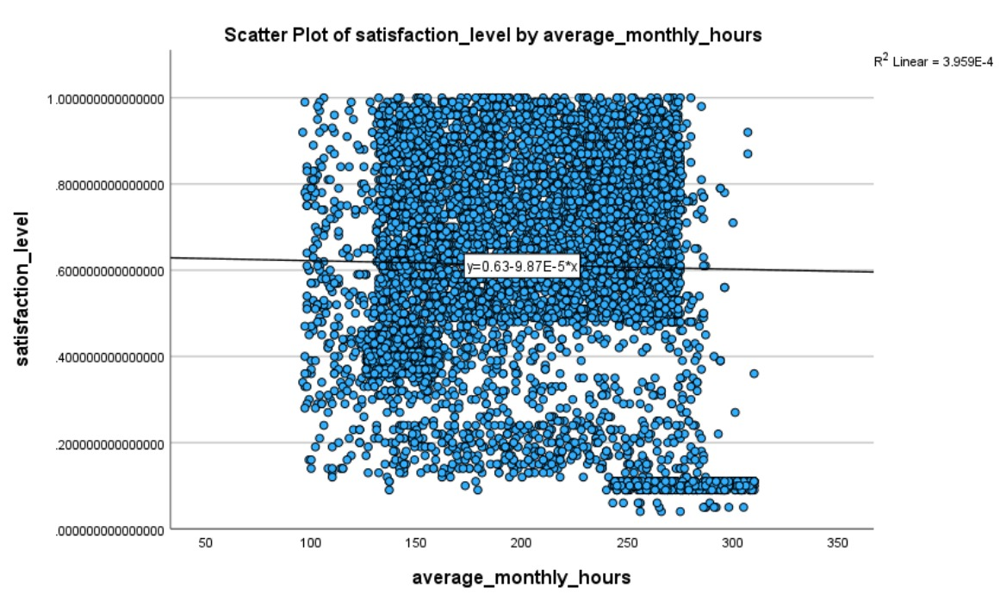
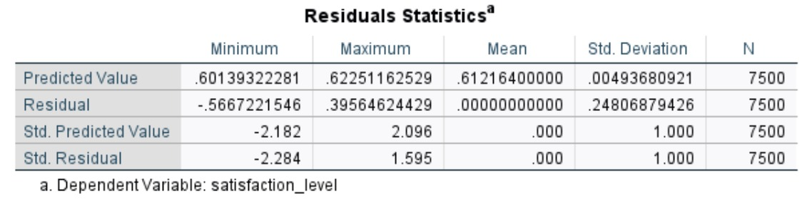
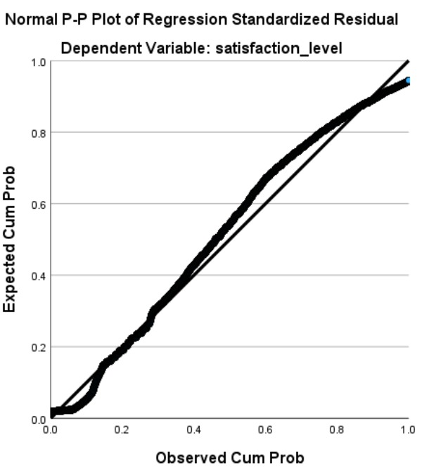
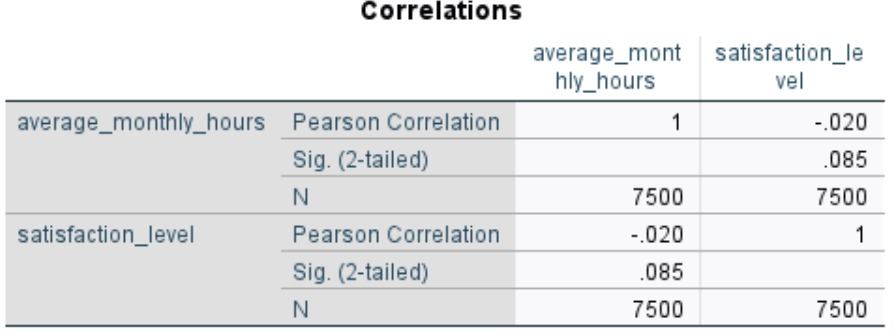

An Analytical Study on AI Workload Management and Satisfaction Metrics
Analyzed the influence of Artificial Intelligence adoption on employee satisfaction levels using advanced statistical methods.
Employed Power BI for interactive data visualization, R programming for data manipulation and modeling, and SPSS for statistical analysis.
Delivered insights that helped understand how AI integration affects workforce morale, supporting data-driven decision-making.

Scatter Plot: Relationship between average monthly working hours and employee satisfaction level. A near-flat regression line and low R² value (~0.0004) indicate minimal correlation.

Residuals Statistics: Mean residual near zero confirms model is unbiased, though variability suggests unexplained factors.

P-P Plot: Deviations from the diagonal line show residuals aren’t perfectly normally distributed, indicating limits of linear model.

Correlation Matrix: Very weak negative correlation (-0.020) between satisfaction and hours worked. Not statistically significant (p = 0.085).